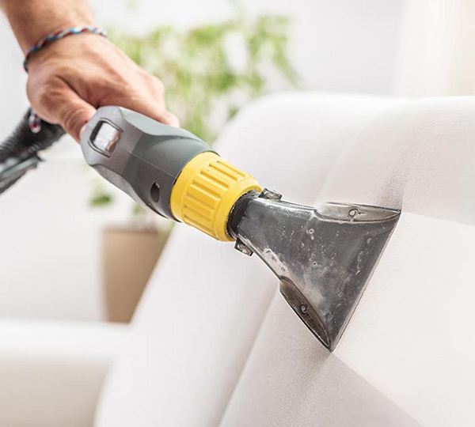
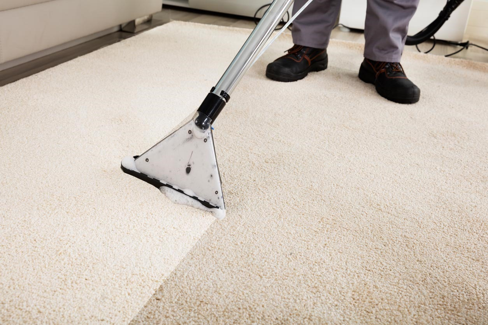

Spécialistes du Nettoyage de Canapé
- 
-
- Nettoyage et entretien de canapés
- Luttez contre les allergies avec le nettoyage de canapé, fauteuils, tapis, moquettes et matelas à domicile!
-
Pensez à nettoyer votre canapé et vos fauteuils pour préparer la
saison estivale ou en fin de saison. Désinfectez, nettoyez et
enlevez les mauvaises odeurs pour assainir votre intérieur.
Les + de INTACT HOME:
- Produits professionnels préservant les tissus et les cuirs
- Matériel professionnel haut de gamme
- Devis gratuit
- Intervention rapide
- Tarif fixé à l'avance
-
- Nettoyage et entretien de Matelas
- Une tâche sur votre matelas? Appelez nous au plus vite pour intervenir sans tarder et maximiser les chances d'éliminer les tâches!
-
INTACT HOME réalise la désinfection et le nettoyage de matelas à
domicile, lavage de sommiers en tissu,
nettoyage de tête de lit, en tissu ou cuir, nettoyage de canapé
convertible avec assises et matelas.
INTACT HOME vous propose les meilleures SERVICES de nettoyage de matelas à domicile.
-

- 
-
- Nettoyage de Moquettes
- Les moquettes se nettoient bien à condition de les entretenir régulièrement!
-
Aspirer vos moquettes et les nettoyer avec des méthodes
professionnelles prolongera leur durée de vie considérablement.
L'entreprise INTACT HOME propose le nettoyage de moquette chez les particuliers et professionnels à domicile, hôtel ou commerces.
Ne changez pas vos moquettes car elles sont sales ou tâchées! Les machines et produits professionnels utilisés par INTACT HOME permettent d'obtenir des résultats exceptionnels en matière d'hygiène et d'esthétique. Les tâches et mauvaises odeurs sont éliminés.